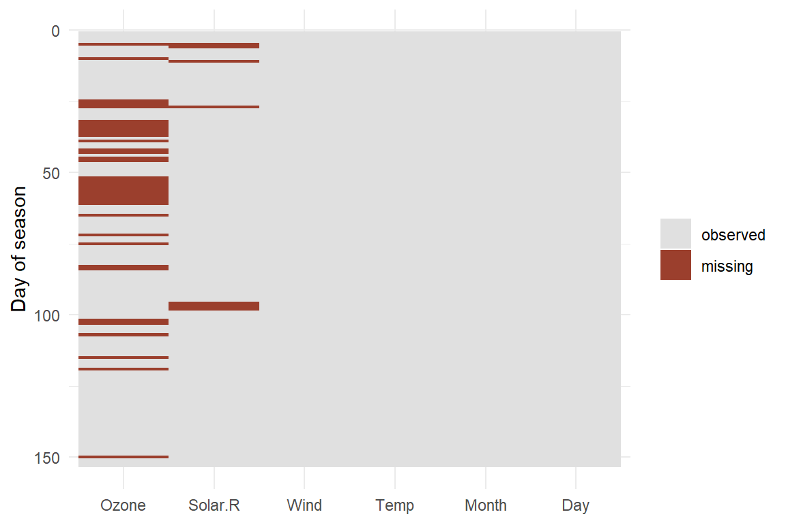

4.1 Missing Data
In 1943 the American military asked a group of statisticians in New York a practical question. Bombers were returning from raids over Europe with bullet holes, and armour is heavy. Where should it go?
Officers had already collected the data. They had walked around the returning aircraft and recorded where the damage was. The pattern was clear: many holes in the wings and the fuselage, far fewer around the engines. The recommendation seemed to follow by itself. Armour the parts that get hit.
Abraham Wald said the opposite. Armour the engines.47
His reasoning was not about the holes that were there. It was about the holes that were not. The damage had been recorded on aircraft that came back. A plane hit in the engine did not come back, so its holes were never counted. The empty regions on the diagram were not evidence of safety. They were evidence of absence.
The data set consisted entirely of survivors, and nothing in the data set said so.
More data did not help
In 1936 the Literary Digest mailed about ten million mock ballots for the American presidential election and received roughly 2.4 million replies — one of the largest polls ever conducted. It predicted Landon 57 %, Roosevelt 43 %. Roosevelt won with about 61 % of the popular vote.
In the same election George Gallup used about 50,000 respondents and called it correctly.48
The Digest did not have too little data. It had a great deal of data from people who were not a cross-section of voters, and no information at all about the millions who never replied.
Most missing data is less dramatic. Someone skips a question about income. An instrument fails for three days. A respondent moves away and leaves the panel. A variable was introduced only in the third wave. None of this feels like a bomber, but the logical structure is identical: we know something about the units we observed, and the units we did not observe are described by nothing at all.
This chapter is about what we can nevertheless say.
4.1.1 What Is Missing, and What It Costs
Definition
Missing data are values that a data set was designed to contain but does not.
The word designed matters. A cell is missing only relative to an expectation: a variable that was never intended to be collected is not missing, it is simply absent.
Two forms are worth separating before anything else, because they call for different remedies.
Unit nonresponse means a whole case is absent. A sampled household never answers the door; a panel member drops out after the second wave. Whole rows are gone, and typically the only thing known about them comes from the sampling frame. This is usually handled with weights.
Item nonresponse means a case is present but individual cells are empty. Someone answers thirty questions and refuses the one about income. Whole cells are gone, and the rest of the row is still informative. This is where imputation lives, and it is what most of this chapter is about.
The distinction matters because the second case gives you something to work with. A respondent who reports age, education, occupation and region but not income has told you a great deal about their missing income.
4.1.1.1 The two costs
Missing data are expensive in two different currencies, and it is worth keeping them apart.
The first cost is precision. Fewer observations mean wider confidence intervals. This is annoying but honest: the analysis simply knows less, and it says so.
The second cost is bias. If the cases that remain differ systematically from the cases that vanished, the analysis is not merely less precise — it answers a question about a different population than the one intended. This cost is not visible in any standard error.
An analysis can lose a great deal of precision and remain correct. It can lose very little precision and be badly wrong.
4.1.1.2 Losses accumulate
A trap that catches nearly everyone: missing values on different variables usually sit in different rows. Add a variable to a model and you may lose cases that had nothing missing on any of the previous ones.
R ships with a small data set that shows this well. airquality records daily air measurements in New York from May to September 1973.
Only two variables have gaps at all: Ozone is missing on 37 of 153 days, Solar.R on 7. That looks like a modest problem. But those two sets of days barely overlap:
nrow(airquality) # all days
#> [1] 153
sum(complete.cases(airquality)) # days with nothing missing
#> [1] 11172.5 % of days survive. Two variables with small individual gaps removed more than a quarter of the data between them.
With ten or twenty variables — an ordinary regression in social science — this arithmetic becomes brutal. A model with twenty variables, each missing on a well-behaved 5 % of cases in different rows, can retain well under half the sample.
Your Turn
Twenty variables, each missing on exactly 5 % of cases, missing independently of one another. What share of rows is complete? Compute \(0.95^{20}\) and give the result as a percentage, rounded to the nearest whole number: %
Now the more useful question. If you found that only 36 % of your rows were complete, would the right response be to (a) run the model on those rows and note the reduced \(n\), or (b) find out which 64 % disappeared?
4.1.2 How Absence Gets Written Down
Before a value can be handled it has to be recognised, and this is where a surprising number of analyses go wrong before they begin.
4.1.2.1 NA, NaN, NULL, and the empty string
R has one general marker for a missing value, and several things that look like it but are not.
c(1, NA, 3) # NA: a value that exists but is unknown
#> [1] 1 NA 3
c(1, NULL, 3) # NULL: nothing at all - the vector is shorter
#> [1] 1 3
0 / 0 # NaN: an undefined numerical result
#> [1] NaNNA means there should be a value here and we do not know it. NULL means there is nothing here, and it disappears rather than leaving a gap — note that the second vector has length 2, not 3. NaN means this calculation has no defined answer.
The relationship between the last two is asymmetric and catches people out:
is.na(NaN) # TRUE - NaN counts as missing
#> [1] TRUE
is.nan(NA) # FALSE - NA is not a failed calculation
#> [1] FALSEUnlike some other statistical packages, R uses the same NA for numeric and character data, so there is no separate missing-string convention. But an empty string is not missing:
A CSV file with empty cells will often import those cells as "" rather than NA, and every subsequent count will treat them as a real category. read_csv() from readr handles this better than base read.csv(), but it is worth checking rather than assuming.
4.1.2.2 Sentinel codes
Long before NA existed, survey data stored missingness inside the variable itself, as an impossible value. The convention survives everywhere: 99 for age, -1 for income, 999 for a test score, 9999 for a year.
These are silent killers. Nothing about the number 99 announces itself as missing. It participates in every calculation as an ordinary value, and an average age of 43 quietly becomes 51.
SOEP missing conventions
The German Socio-Economic Panel does something more interesting than marking values as merely absent. It records why they are absent, using negative codes.49
| Code | Meaning |
|---|---|
| \(-1\) | no answer or don't know |
| \(-2\) | does not apply |
| \(-3\) | implausible value |
| \(-4\) | inadmissible multiple response |
| \(-5\) | not included in this version of the questionnaire |
| \(-6\) | version of questionnaire with modified filtering |
| \(-8\) | question not part of the survey programme this year |
These are not seven flavours of the same thing. A \(-2\) means the question was correctly skipped — an unemployed person has no answer to a question about their current employer, and nothing is missing in any meaningful sense. A \(-8\) is a property of the questionnaire, not of the respondent. A \(-1\) is a genuine refusal, and it is the only one of the three that carries information about the person.
This is the point worth taking away from the box. Converting everything to NA is the standard first step, and it throws away exactly the information needed to judge what kind of problem you have:
erwerb <- c(1, 2, -2, 1, -8, -1, 2) # a small illustration
# The usual move: everything negative becomes NA
employment <- ifelse(erwerb < 0, NA, erwerb)
# Better: keep the reason alongside the value
reason <- factor(
ifelse(erwerb >= 0, "observed", as.character(erwerb)),
levels = c("observed", "-1", "-2", "-8"),
labels = c("observed", "refused", "does not apply", "not asked")
)
data.frame(erwerb, employment, reason)
#> erwerb employment reason
#> 1 1 1 observed
#> 2 2 2 observed
#> 3 -2 NA does not apply
#> 4 1 1 observed
#> 5 -8 NA not asked
#> 6 -1 NA refused
#> 7 2 2 observedThe second column is what the analysis uses. The third is what tells you whether the first column can be trusted — and whether a case is missing at all. A person coded \(-2\) should usually leave the analysis by a filter, not by an imputation.
Recoding to NA is not a neutral cleaning step. It compresses several different reasons for absence into one symbol. Do it, but keep the reasons somewhere.
The SOEP practice data used elsewhere in this book has already been through this step, which is why it contains no negative codes and no missing values at all. Real SOEP data does not look like that.
4.1.3 What R Does With NA
NA is contagious by design. Any arithmetic touching an unknown value produces an unknown result, because that is the honest answer.
This is a feature. R refuses to guess, and it tells you loudly. The cure is to state explicitly that missing values should be dropped:
Note what na.rm = TRUE actually claims. It does not remove a problem; it computes the mean among the observed cases and asks you to accept that as an estimate of the mean overall. That is a real assumption, made with two words.
4.1.3.1 Comparisons do not work the way you expect
The single most common NA bug in R:
Both return NA, not TRUE or FALSE. Logically this is right — comparing two unknown quantities cannot yield a known answer — but it means x == NA never works as a test. Use is.na(x).
It also means filters behave oddly. In base R, rows with NA in the filtering variable produce phantom rows of NA:
d <- data.frame(id = 1:5, x = c(10, NA, 30, NA, 50))
d[d$x > 20, ]
#> id x
#> NA NA NA
#> 3 3 30
#> NA.1 NA NA
#> 5 5 50Two rows of pure NA appear that correspond to no observation. subset() and dplyr::filter() both drop them instead — which is usually what you wanted, but note that they drop them silently.
4.1.3.2 Loud and quiet functions
This is the practical heart of the matter. Some functions refuse to proceed, some quietly drop cases, and the quiet ones are the dangerous ones.
| Function | With NA present |
Loud? |
|---|---|---|
mean(), sum(), var(), sd(), median(), max() |
return NA |
loud — needs na.rm = TRUE |
cor() |
returns NA |
loud — needs use = "complete.obs" |
table() |
omits NA from the counts |
quiet — needs useNA = "ifany" |
sort() |
drops NA, result is shorter |
quiet — needs na.last = TRUE |
lm(), glm() |
drops incomplete rows | quiet — see below |
ggplot2 geoms |
drop incomplete rows | a console warning, easily overlooked |
length() |
counts NA as an element |
— use sum(!is.na(x)) |
ifelse() |
passes NA through to the result |
— |
The quiet row that matters most is table(), because it is what people use to check a variable:
x <- c("yes", "no", NA, "yes", NA)
table(x) # 3 observations reported, 5 exist
#> x
#> no yes
#> 1 2
table(x, useNA = "ifany") # the truth
#> x
#> no yes <NA>
#> 1 2 2A variable that is 40 % missing looks perfectly healthy in the first output. Make useNA = "ifany" a habit.
Your Turn
v <- c(3, NA, 1, 2). What does length(sort(v)) return?
And is this statement true or false: na.rm = TRUE gives the same answer as an analysis with no missing data.
4.1.4 Why Everyone Does Complete-Case Analysis
Ask a room of social scientists how they handle missing data and most will say listwise deletion — dropping every row that has a gap anywhere. Ask why, and the answers usually concern robustness, transparency, or convention.
The honest answer is simpler. They did not choose it. R chose it for them, and did not mention it.
model <- lm(Ozone ~ Temp + Wind, data = airquality)
nrow(airquality) # rows in the data
#> [1] 153
nobs(model) # rows the model actually used
#> [1] 11637 days — 24.2 % of the data — were removed, and lm() printed nothing about it. The behaviour is controlled by a global option most users never see:
na.omit silently discards incomplete rows. There are alternatives. na.exclude also drops them from the fit but pads residuals() and fitted() back to the original length, which makes plotting against the original data far less error-prone. And na.fail refuses to run at all:
lm(Ozone ~ Temp + Wind, data = airquality, na.action = na.fail)
#> Error in `na.fail.default()`:
#> ! fehlende Werte im ObjektThat error message is arguably what should happen by default.
Complete-case analysis is the most widely used missing-data method in the social sciences, and it is used mostly because it is a software default rather than a decision. A default is not a justification.
None of this means complete-case analysis is wrong. It is unbiased when data are missing completely at random, and it is often defensible when few cases are lost. But it is a method with assumptions, and it deserves to be named and defended like any other.
Section 8.3.2 makes the same point about measurement: a single survey item is a measurement model, one whose assumptions are hidden by being invisible. Complete-case analysis is the missing-data version of the same idea.
Truly Dedicated: when complete cases are actually fine
Complete-case analysis is not merely a fallback. In a regression, it gives unbiased coefficient estimates under a condition weaker than MCAR: it is enough that missingness does not depend on the outcome, once the predictors in the model are conditioned on. Missingness may depend freely on the predictors themselves.
This is why complete-case regression is sometimes more robust than imputation, and why a well-argued complete-case analysis reported alongside a multiple-imputation analysis is a genuine sensitivity check rather than a hedge.
The cost is precision, and it is often severe.
4.1.5 Three Mechanisms
The literature classifies missing data by the mechanism that produced it. The three terms go back to Donald Rubin.50
Before the definitions, one warning: these are not three types of missing value that you can look at and tell apart. They are three claims about a process you never observe.
4.1.5.1 Missing Completely at Random
The probability of a value being missing does not depend on anything — not on the missing value itself, and not on any other variable.
A laboratory technician drops one tray of samples. A page of a questionnaire is lost in the post. Under MCAR the observed cases are a genuine random subsample: you lose precision and nothing else.
4.1.5.2 Missing at Random
The probability of missingness depends on observed variables, but not on the missing value itself once those are accounted for.
Younger respondents skip the income question more often. Among respondents of the same age, whether income is reported has nothing further to do with how much they earn. The name is unfortunate — nothing here is random in ordinary usage — but the idea is workable: the reason for the gap is in your data.
4.1.5.3 Missing Not at Random
The probability of missingness depends on the unobserved value itself, even after conditioning on everything observed.
High earners decline to report income because it is high. Respondents in a depressive episode skip the depression scale because of their symptoms. Bombers hit in the engine do not return because they were hit in the engine.
4.1.5.4 The part that is usually skipped
Textbooks present these as three properties of a data set. They are not. MAR in particular is a property of the missingness relative to the variables you have included.
The same gaps in the same file can be MNAR in one analysis and MAR in another. If income is missing because of income, but you also observe occupation, education, region and last year's income — variables which together predict income well — then conditioning on them can make the remaining dependence on income itself negligible. Nothing about the data changed. Your model changed.
"Is this MAR?" is not a well-posed question. The answerable version is "MAR given what?"
This has a direct practical consequence: including additional variables that predict either the missingness or the missing value itself makes the MAR assumption more defensible. Such auxiliary variables need not appear in your substantive model at all.
Readers of Section 8.3 will recognise the shape of this argument. There, being latent was a modelling role rather than a property of a concept. Here, being missing at random is a property of a mechanism in relation to a model, not a label attached to a column.
Truly Dedicated: what can be tested?
MCAR is partly testable. If data are MCAR, cases with and without a missing value on \(X\) should not differ systematically on any observed variable. Little's MCAR test formalises this. A rejection is informative; a non-rejection mostly reflects low power.
MAR versus MNAR cannot be tested at all, and the reason is airtight. Distinguishing them requires knowing whether missingness depends on the missing values — which are, by construction, not available. Any two models that differ only in this respect fit the observed data identically.
This is uncomfortable, and it is the honest situation. The response is not a test but a sensitivity analysis: estimate the quantity of interest under several plausible assumptions and report how much the conclusion moves.
4.1.5.5 Seeing the difference where the truth is known
Since we cannot test the mechanism in real data, we simulate one where the answer is known. Two thousand people, income generated from education, then three different missingness mechanisms applied to the same income variable.
set.seed(20260806)
N <- 2000
edu <- round(rnorm(N, mean = 12, sd = 3))
edu[edu < 7] <- 7
inc <- 20000 + 2000 * edu + rnorm(N, mean = 0, sd = 8000)
truth <- mean(inc)
logistic <- function(x) 1 / (1 + exp(-x))
mcar <- runif(N) < 0.35 # pure chance
mar <- runif(N) < logistic(3.2 - 0.30 * edu) # depends on education
mnar <- runif(N) < logistic(3.6 - 0.00009 * inc) # depends on income itselfThe mechanisms differ only in what drives the gap. In each case we then compute the mean income among the observed cases and compare it with the truth we planted:
| Mechanism | Missing | Truth | Observed | Error |
|---|---|---|---|---|
| MCAR | 34.9 % | 44125 | 44141 | +15 |
| MAR | 40.9 % | 44125 | 45738 | +1613 |
| MNAR | 41.5 % | 44125 | 47486 | +3360 |
All three lost a similar share of cases. Under MCAR the observed mean is essentially the truth. Under MAR it is too high by roughly 1,600 € — because low-education respondents dropped out more often and they earn less. Under MNAR it is too high by more than 3,000 €.
The crucial observation: the three data sets look equally damaged. Same variables, similar amount of missing, no diagnostic in the file distinguishes them. The difference lies entirely in a mechanism that was never recorded.
4.1.6 Looking at the Pattern
Before choosing a remedy, look at the gaps. Three questions are usually enough: how much, where, and together with what.
sapply(airquality, function(x) sum(is.na(x)))
#> Ozone Solar.R Wind Temp Month Day
#> 37 7 0 0 0 0
sapply(airquality, function(x) round(mean(is.na(x)), 3))
#> Ozone Solar.R Wind Temp Month Day
#> 0.242 0.046 0.000 0.000 0.000 0.000A picture of the whole matrix shows structure that counts cannot:
missmap <- data.frame(
day = rep(seq_len(nrow(airquality)), times = ncol(airquality)),
variable = factor(rep(names(airquality), each = nrow(airquality)),
levels = names(airquality)),
missing = as.vector(is.na(as.matrix(airquality)))
)
ggplot(missmap, aes(x = variable, y = day, fill = missing)) +
geom_tile() +
scale_y_reverse() +
scale_fill_manual(values = c("FALSE" = "grey88", "TRUE" = "#9b3f2d"),
labels = c("observed", "missing")) +
labs(x = NULL, y = "Day of season", fill = NULL) +
theme_minimal()
Figure 4.1: Missing values in airquality. Each column is a variable, each row a day.
The gaps in Ozone are not scattered evenly — they cluster into runs of consecutive days. There are 17 such runs, the longest covering ten days in a row. Individual refusals do not look like this; equipment downtime does. That is a substantive clue about the mechanism, and it came from a picture rather than a test.
The second diagnostic is more direct: compare observed variables between cases with and without a gap. If they differ, MCAR is already in trouble.
aggregate(cbind(Temp, Wind, Month) ~ is.na(Ozone), data = airquality, FUN = mean)
#> is.na(Ozone) Temp Wind Month
#> 1 FALSE 77.87069 9.862069 7.198276
#> 2 TRUE 77.91892 10.256757 6.351351
table(Month = airquality$Month, missing = is.na(airquality$Ozone))
#> missing
#> Month FALSE TRUE
#> 5 26 5
#> 6 9 21
#> 7 26 5
#> 8 26 5
#> 9 29 1Temperature is practically identical in the two groups, and wind only slightly higher on the missing days. The month, however, is decisive: 21 of the 30 days in June have no ozone reading, against five in May, five in July, five in August and one in September. Seventy per cent of one month is gone.
That single table changes the analysis. Any summer average computed from complete cases is really an average with June almost entirely removed — and ozone has a strong seasonal pattern. It also tells us what any imputation model must contain: Month above all, and Wind. Temperature earns its place because it predicts ozone well, not because it predicts the gaps.
Your Turn
Given that June is nearly absent, is the complete-case mean of Ozone more likely to be too high or too low? Think about which months are over-represented among the survivors.
4.1.7 What Can Be Done
We now walk up a ladder, using one deliberately simple target: the average ozone level in New York, summer 1973.
4.1.7.2 Rung 2: mean imputation
Fill every gap with the mean of the observed values. It is the most intuitive repair, and it is worse than doing nothing.
ozone_meanimp <- airquality$Ozone
ozone_meanimp[!observed] <- mean(ozone_cc)
c(n = length(ozone_meanimp),
mean = mean(ozone_meanimp),
sd = sd(ozone_meanimp),
se = sd(ozone_meanimp) / sqrt(length(ozone_meanimp)))
#> n mean sd se
#> 153.000000 42.129310 28.693372 2.319722Look at what happened. The mean is identical — filling gaps with the mean cannot move the mean. Nothing was gained. But the standard deviation fell from about 33 to about 29, and the standard error fell by roughly a quarter.
Mean imputation lies twice. It invents 37 observations that sit exactly on the average, which mechanically shrinks the variance — and every variance, correlation and regression coefficient computed afterwards inherits that distortion. Then it reports a standard error as though those invented values were real measurements.
Mean imputation adds no information and destroys real information. It produces a narrower distribution and a more confident-looking result than complete-case analysis, while being no more accurate. It should not be used.
4.1.7.3 Rung 3: regression imputation
A better guess uses the other variables. Predict ozone from temperature, wind and month, and fill the gaps with the predictions.
Month enters as a factor, not as a number. Ozone does not rise steadily from May to September; it peaks in July and August. A linear month term would impose a straight line on a hump, and Section 4.1.7.6 shows what that costs.
fit <- lm(Ozone ~ Temp + Wind + factor(Month), data = airquality)
ozone_reg <- airquality$Ozone
ozone_reg[!observed] <- predict(fit, newdata = airquality[!observed, ])
c(mean = mean(ozone_reg), sd = sd(ozone_reg))
#> mean sd
#> 41.24926 30.66070The mean has moved from 42.13 down to 41.25 — and the direction is exactly what Section 4.1.6 led us to expect. June was nearly absent, June has low ozone, so restoring it must pull the average down. A diagnostic finding and an estimate agreeing with one another is the most reassuring thing that can happen in an analysis of this kind.
But the variance is still too small, and for an instructive reason: every imputed value sits exactly on the regression line. Real observations scatter around it. We have filled the gaps with values that are too well behaved — a data set in which some points obey the model perfectly.
4.1.7.4 Rung 4: add the noise back
The repair is to add a random draw from the residual distribution to each prediction, so that imputed values scatter the way real ones do.
set.seed(20260806)
sigma <- summary(fit)$sigma
ozone_stoch <- airquality$Ozone
ozone_stoch[!observed] <- predict(fit, newdata = airquality[!observed, ]) +
rnorm(sum(!observed), mean = 0, sd = sigma)
c(mean = mean(ozone_stoch), sd = sd(ozone_stoch))
#> mean sd
#> 41.20483 33.08921Now the spread is realistic. One problem remains, and it is the deep one. We have produced one completed data set and will analyse it as though it were the truth. But those imputed values were guesses, and a different random draw would have given different numbers — and a slightly different answer. That uncertainty is real, and a single completed data set hides it completely.
4.1.7.5 Rung 5: multiple imputation, the long way home
The solution is almost embarrassingly direct: do it several times.
Create \(M\) completed data sets, each with different random draws. Run the analysis separately on each. Then combine the \(M\) answers using rules that account for two distinct sources of uncertainty — the ordinary sampling uncertainty within each analysis, and the disagreement between the analyses, which is exactly the uncertainty caused by the gaps.
Following the spirit of Section 6.1, we build it by hand before reaching for a package.
set.seed(20260806)
M <- 5
Q <- numeric(M) # the estimate from each completed data set
U <- numeric(M) # its squared standard error
for (m in 1:M) {
y <- airquality$Ozone
y[!observed] <- predict(fit, newdata = airquality[!observed, ]) +
rnorm(sum(!observed), mean = 0, sd = sigma)
Q[m] <- mean(y)
U[m] <- var(y) / length(y)
}
round(Q, 2) # five different answers to the same question
#> [1] 41.20 41.37 41.66 41.54 41.28Five completed data sets, five slightly different means. That disagreement is the point: it is the visible trace of what we do not know.
Rubin's rules combine them. The pooled estimate is the average, and the total variance adds the between-imputation variance to the average within-imputation variance:
\[\bar{Q} = \frac{1}{M} \sum_{m=1}^{M} Q_m \qquad \bar{U} = \frac{1}{M} \sum_{m=1}^{M} U_m \qquad B = \frac{1}{M-1} \sum_{m=1}^{M} (Q_m - \bar{Q})^2\]
\[T = \bar{U} + \left(1 + \frac{1}{M}\right) B\]
Qbar <- mean(Q)
Ubar <- mean(U)
B <- var(Q)
Tvar <- Ubar + (1 + 1/M) * B
c(estimate = Qbar, se = sqrt(Tvar))
#> estimate se
#> 41.410672 2.648021The term \(\bar{U}\) is the uncertainty an analyst would face with no missing data at all. The term \(B\) is the price of the gaps. The factor \((1 + 1/M)\) corrects for having used a finite number of imputations. If \(B\) is near zero, the missing values were well predicted by the other variables and cost little. If \(B\) is large, the gaps matter a great deal — and multiple imputation is the method that says so out loud.
4.1.7.6 The imputation model can be wrong
Everything above depends on one thing we have not yet examined: whether the model producing the imputations is any good.
Recall the choice made in Section 4.1.7.3 to treat month as a factor. Suppose we had written Month instead — the obvious, careless thing to do, since month is stored as a number.
fit_linear <- lm(Ozone ~ Temp + Wind + Month, data = airquality)
june <- !observed & airquality$Month == 6
c(linear = mean(predict(fit_linear, newdata = airquality[june, ])),
factor = mean(predict(fit, newdata = airquality[june, ])),
observed_in_june = mean(airquality$Ozone[observed & airquality$Month == 6]))
#> linear factor observed_in_june
#> 50.83404 39.67835 29.44444The linear model predicts about 51 for the missing June days. The observed June days average about 29. It is wrong by more than twenty units on the very cases that matter most — because a straight line through a seasonal hump has to be too high at the ends.
The consequence flows straight through to the estimate: multiple imputation under the linear model returns roughly 42.7, slightly further from the truth than doing nothing. Under the factor model it returns 41.4.
Multiple imputation propagates uncertainty about the missing values. It does not propagate uncertainty about the imputation model. A misspecified imputation model produces confident, well-calibrated-looking answers that are wrong, and the pooled standard error gives no hint of it.
This is why the diagnostic work in Section 4.1.6 is not a preliminary. It is what tells you which variables must enter the imputation model and in what form.
| Method | n | Mean | SD | SE |
|---|---|---|---|---|
| Complete cases | 116 | 42.13 | 32.99 | 3.06 |
| Mean imputation | 153 | 42.13 | 28.69 | 2.32 |
| Regression (no noise) | 153 | 41.25 | 30.66 | 2.48 |
| Stochastic regression | 153 | 41.20 | 33.09 | 2.68 |
| Multiple imputation (M = 5) | 153 | 41.41 | -- | 2.65 |
Read the table by column.
The means split into two groups. Complete cases and mean imputation both report 42.13, because filling gaps with the average cannot move the average. The three methods that use the other variables all land near 41.2–41.4 — lower, and closer to the 40.7 you get by weighting the five months equally. The methods that looked at June found June.
The standard deviations condemn mean imputation on their own: it understates the spread of ozone by around 13 %, and every correlation and regression coefficient computed from such a data set inherits that distortion.
The standard errors complete the indictment. Mean imputation claims the greatest precision of any method here, on the strength of 37 values it invented. Multiple imputation reports a slightly smaller standard error than complete cases — a real gain, because it used 153 days instead of 116 — while remaining honest about where the extra information came from.
Your Turn
Set M <- 50 and rerun the loop. Does the pooled estimate change much? Does the standard error?
Then remove Wind from the imputation model and rerun. What happens to \(B\), and why?
4.1.7.7 On the shoulders of giants
In practice nobody codes this by hand. The mice package implements multiple imputation by chained equations, handling several incomplete variables at once, each with a model suited to its type.51
# install.packages("mice")
library(mice)
imp <- mice(airquality, m = 20, seed = 20260806, printFlag = FALSE)
fit_mi <- with(imp, lm(Ozone ~ Temp + Wind))
summary(pool(fit_mi))pool() applies exactly the rules computed above. Three practical points that the syntax hides:
The imputation model must be at least as rich as the analysis model. If you impute without a variable that later appears in your regression — especially an interaction or a non-linear term — you have imputed under a model that assumes the effect away, and you will find it attenuated.
Include auxiliary variables that predict missingness or the missing values, even if they play no part in the substantive model. This is the practical route to making MAR plausible, as argued in Section 4.1.5.4.
And impute the outcome too, then let it be. Imputing \(Y\) using only the predictors already in the model adds nothing; imputing it using auxiliary variables can help.
4.1.7.8 Multiple imputation does not repair MNAR
Everything above assumes the gaps are explainable by observed variables. Return to the simulation, where we know the truth, and apply the same by-hand procedure to all three mechanisms:
| Mechanism | Complete cases: error | Multiple imputation: error |
|---|---|---|
| MCAR | 15 | 22 |
| MAR | 1613 | -130 |
| MNAR | 3360 | 2476 |
Under MCAR both methods are fine. Under MAR, complete-case analysis is badly biased and multiple imputation removes almost all of it — because education, the variable driving the missingness, is in the imputation model.
Under MNAR, multiple imputation improves matters somewhat and remains substantially wrong. It could not do better: the variable driving the missingness is income itself, which is precisely what is not there.
Multiple imputation is not a repair for data that are missing for unobserved reasons. It converts an assumption you cannot check into an estimate — correctly, and only as far as the assumption holds.
4.1.8 Which Models Need Complete Data?
A question worth answering briefly, because the answer is not uniform.
| Method | Behaviour with incomplete data |
|---|---|
lm(), glm() |
Listwise deletion by default, silently. Needs complete rows on all model variables. |
| Mixed and multilevel models | Use all available measurement occasions; a person with three of five waves contributes those three. Missing covariates still cause listwise deletion. |
SEM and CFA (lavaan) |
With missing = "fiml", full-information maximum likelihood uses every case that has at least one observed indicator. No imputation, no deletion — the likelihood is evaluated on what each case actually has. |
| Item response theory | Handles missingness natively. Booklet designs in PISA and similar assessments are missing by design: no student sees every item, and the model links them anyway. See Section 8.7. |
| Principal component analysis | Requires a complete matrix. Standard implementations delete or need pre-imputation. |
| Tree-based methods | Some handle gaps internally through surrogate splits; others require imputation first. Implementation-dependent. |
Two observations are worth drawing out.
First, the methods that cope best are the likelihood-based ones. FIML and IRT do not fill anything in — they evaluate the likelihood using whatever each case supplied. Under MAR this is statistically equivalent to doing multiple imputation properly, and it requires no imputation step at all.
Second, and more useful than it sounds: missingness is not always a defect. The PISA booklet design deliberately gives each student a fraction of the item pool, and the measurement model recovers a common scale regardless. Planned missingness buys content coverage at the price of individual precision — a trade made on purpose, and one that Section 8.7 develops in full.
4.1.9 What Should Be Reported
Missing data are among the most under-reported aspects of empirical work. A transparent account states:
- how much is missing, per variable and for the analysis sample as a whole;
- how the analysis sample was constructed, and how many cases each step removed;
- how missing codes were recognised and recoded;
- whether cases coded does not apply were filtered rather than imputed;
- how cases with and without gaps differ on observed variables;
- which method was used, and why;
- for imputation: the imputation model, the auxiliary variables, the number of imputations, and the software;
- how much the conclusion changes under at least one alternative assumption.
Point 8 carries the most weight and appears least often. Since the mechanism cannot be tested, the credibility of a result rests on how far it moves when the assumption is varied. A finding that survives complete-case analysis, multiple imputation, and a deliberately pessimistic MNAR scenario is worth considerably more than one that appears under a single default.
4.1.10 The People Behind the Gaps
A closing thought that belongs to this chapter more than to any other.
Every NA in a social science data set marks a person who did not answer. They had reasons. The income question felt intrusive. The wording made no sense in their situation. They had no time. They did not trust what would happen to the answer. The interviewer never reached their building.
These reasons are not noise. They are social facts, and they are patterned. People in precarious employment, in poor health, with less education, with less trust in institutions, or with a migration history are systematically harder to survey — and they are frequently the people a study most wants to learn about.
This is why complete.cases() is not a technical convenience. It is a decision, made in one line and usually without comment, about whose lives remain in the analysis.
... it is important not to lose sight of the individuals whose lives provide the data for the models.
The same quotation appears in Section 1.1.5, where this book began thinking about what stands behind a number. It applies with more force here. Missing data is the point at which individuals leave the analysis silently, and it deserves to be a decision made in the open.
Missing data are not a nuisance to be cleared away before the analysis begins. They are part of the evidence.
The pattern of what is absent tells you something about the process that produced your data, and every method of handling it — including doing nothing — encodes an assumption about that process. The assumption cannot be tested. It can be stated, defended, and varied.
Wald, A., A Method of Estimating Plane Vulnerability Based on Damage of Survivors, Statistical Research Group, Columbia University, 1943; reprinted by the Center for Naval Analyses in 1980, https://www.cna.org/analyses/1980/a-method-of-estimating-plane-vulnerability. The widely circulated diagram of a bomber covered in red dots is a modern illustration, not part of Wald's memoranda. See also
 Survivorship bias.↩︎
Survivorship bias.↩︎Approximately ten million ballots mailed, about 2.4 million returned; the Digest predicted Landon 57 % to Roosevelt 43 %, while Roosevelt took roughly 61 % of the popular vote. See https://en.wikipedia.org/wiki/Nationwide_opinion_polling_for_the_1936_United_States_presidential_election.↩︎
SOEPcompanion, Missing Conventions: http://companion.soep.de/Data%20Structure%20of%20SOEPcore/Missing%20Conventions.html.↩︎
Rubin, D. B., Inference and Missing Data, Biometrika 63(3), 1976, 581--592. The standard modern reference is Little, R. J. A., and Rubin, D. B., Statistical Analysis with Missing Data, 3rd edition, Wiley, 2019.↩︎
van Buuren, S., and Groothuis-Oudshoorn, K., mice: Multivariate Imputation by Chained Equations in R, Journal of Statistical Software 45(3), 2011, 1--67. A freely available book-length treatment is van Buuren, S., Flexible Imputation of Missing Data, 2nd edition: https://stefvanbuuren.name/fimd/.↩︎